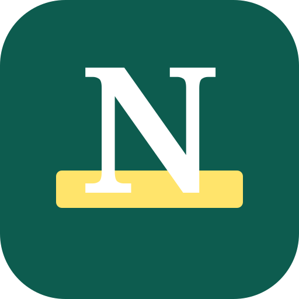

NativifyWrite something the way you normally would. See how a native speaker would say it, and why each change sounds more natural.
Paste something you only half got: a line from a show, a Slack message, something a coworker said. Get the slang and the tone explained, then use it yourself.
Practice works the other way round: you see the meaning and a situation, and you come up with the phrase.
Your key is saved only on this phone, in this browser. Nativify sends it straight to Anthropic and nowhere else.
On iPhone, tap Share, then "Add to Home Screen". On Android, open the browser menu and tap "Add to Home screen". Nativify then opens like an app.